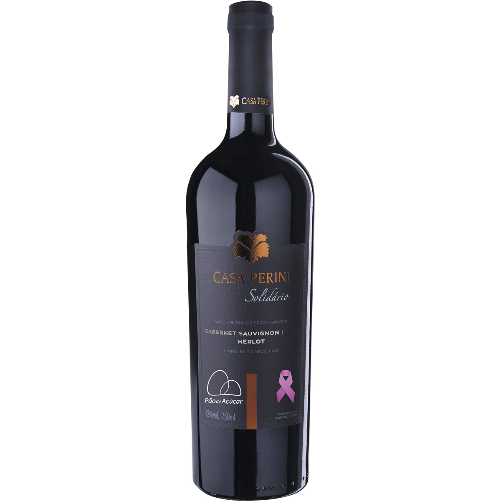
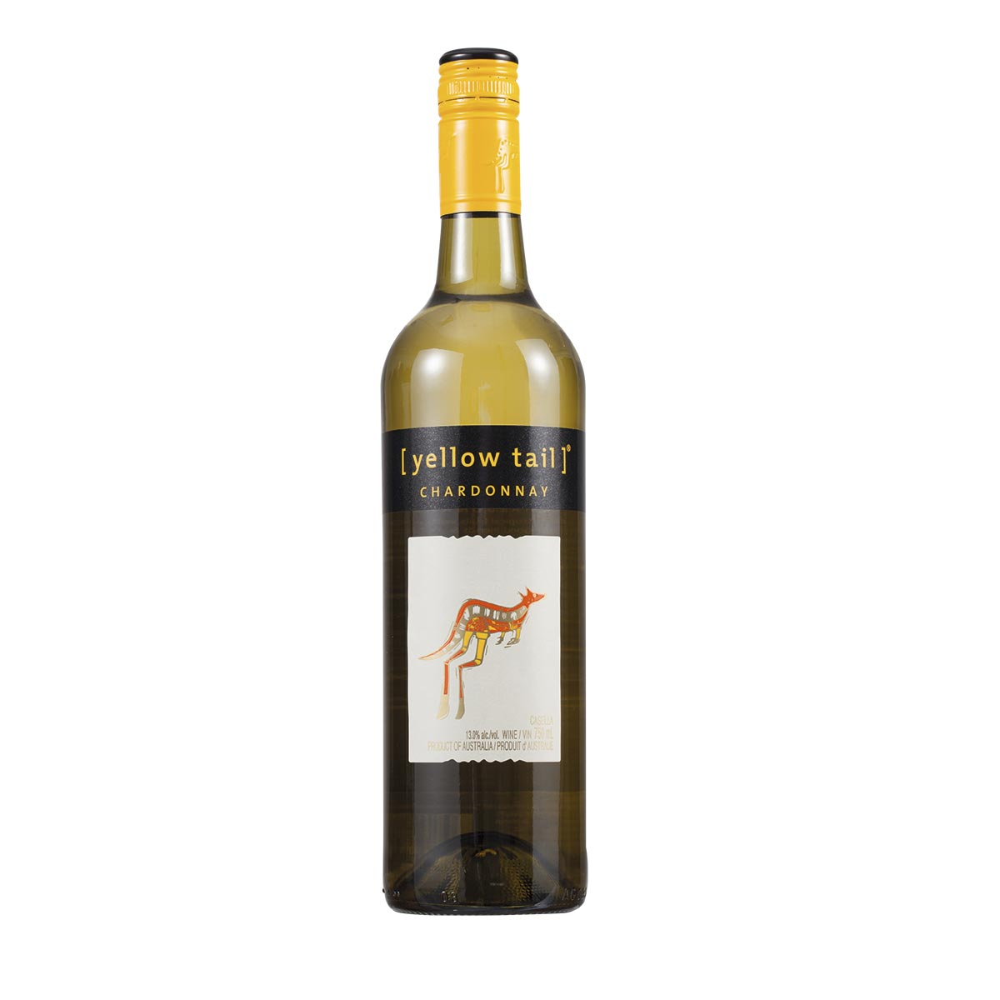
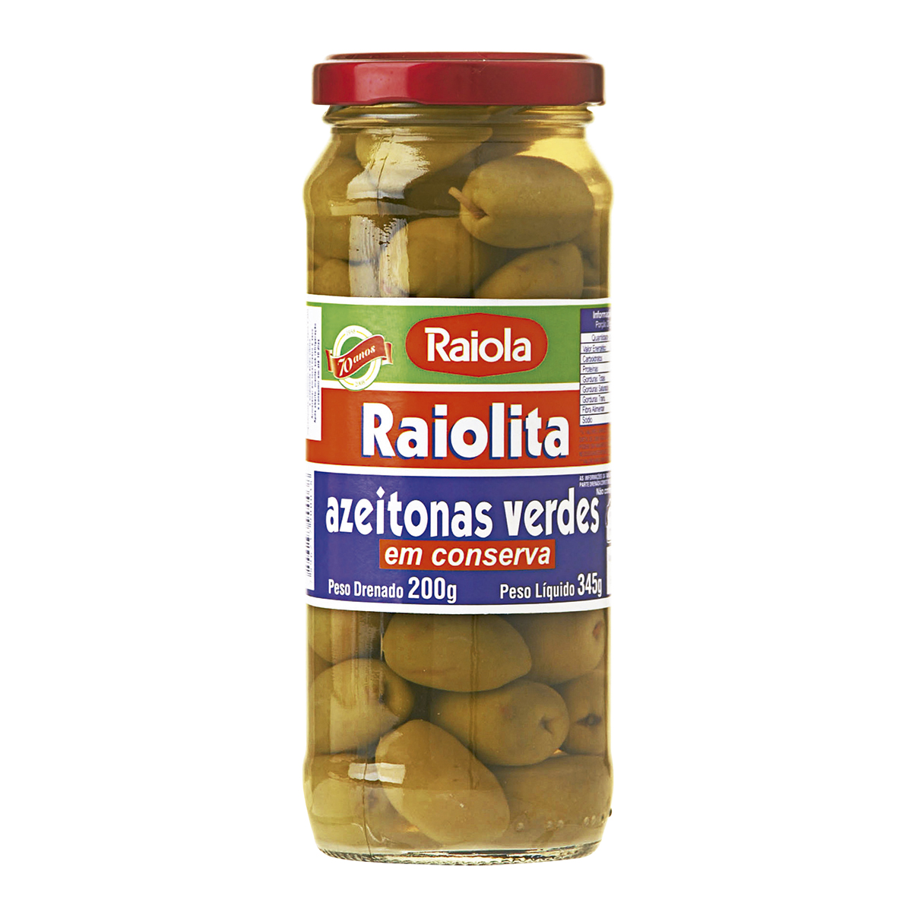

<hmtl>
  <head>
	<meta charset="UTF-8">
	<title>Varejão Online</title>
	<link rel="stylesheet" href="css/estilo.css">
	<script type="text/javascript" src="js/jquery-1.11.1.js"></script>
	<script type="text/javascript" src="js/jquery.jcarousellite.min.js"></script>
  </head>

<body>

<div id="carrossel">
<div id="slides">
<ul>
    <li><a href="#"></a></li>
    <li><a href="#"></a></li>
    <li><a href="#"></a></li>
</ul>
</div>
<div id="buttons"><a id="prev" href="#">prev</a>
<a id="next" href="#">next</a></div>
</div>


<!--div id="caroussel">
    <ul>
        <li><p>Texto da imagem 01</p></li>
        <li><p>Texto da imagem 02</p></li>
        <li><p>Texto da imagem 03</p></li>
        <li><p>Texto da imagem 04</p></li>
    </ul>
</div>
<a href="#" class="prev">Anterior</a>
<a href="#" class="next">Próximo</a-->


<script>
$(document).ready(function() {
 
//Velocidade da rotação e contador
var speed = 5000;
var run = setInterval('rotate()', speed);
 
//Pega o valor da largura e calcular o valor da posição da esquerda
var item_width = $('#slides li').outerWidth();
var left_value = item_width * (-1);
 
//Coloca o último item antes do primeiro item, caso o usuário clique no botão de ANTERIOR
$('#slides li:first').before($('#slides li:last'));
 
//Coloca o item atual na posição correta
$('#slides ul').css({'left' : left_value});
 
//Se o usuário clica no botão ANTERIOR
$('#prev').click(function() {
 
//Pega a posição da direita
var left_indent = parseInt($('#slides ul').css('left')) + item_width;
 
//Move o item
$('#slides ul').animate({'left' : left_indent}, 200,function(){
 
//Move o último item e o coloca como o primeiro
$('#slides li:first').before($('#slides li:last'));
 
//Coloca o item atual na posição correta
$('#slides ul').css({'left' : left_value});
 
});
 
//Cancela o comportamento do click
return false;
 
});
 
//Se o usuário clica no botão PROXIMO
$('#next').click(function() {
 
//Pega a posição da direita
var left_indent = parseInt($('#slides ul').css('left')) - item_width;
 
//Move o item
$('#slides ul').animate({'left' : left_indent}, 200, function () {
 
//Move o último item e o coloca como o primeiro
$('#slides li:last').after($('#slides li:first'));
 
//Coloca o item atual na posição correta
$('#slides ul').css({'left' : left_value});
 
});
 
//Cancela o comportamento do click
return false;
 
});
 
//Se o usuário está com o mouse sob a imagem, para a rotacao, caso contrário, continua
$('#slides').hover(
 
function() {
clearInterval(run);
},
function() {
run = setInterval('rotate()', speed);
}
);
 
});
 
//O temporatizador chamará essa função e a rotação será feita
function rotate() {
$('#next').click();
}
</script>

<!--script type="text/javascript">
jQuery(document).ready(function () {
    $("#caroussel").jCarouselLite({
        btnNext: "#next",
        btnPrev: "#prev",
        visible: 2
    });
});
</script-->
</body>

</html>

